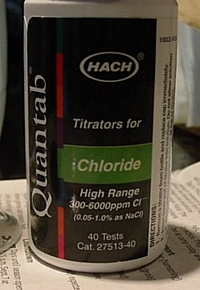
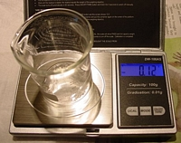
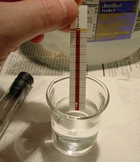
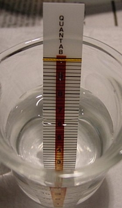
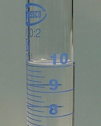
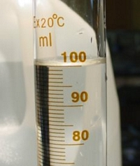
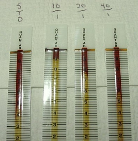

Chloride Indicator strips
The following is from Swede's blog on APCFORUMS.

If you go for these, be sure to get the high-range
strips, which test between 0.2g to 6.0 grams / liter. The first step, for
me at least, was to verify that the strips are reasonably accurate, and do
in fact work. At less than a buck a strip, I don't mind "wasting" a couple
to get the hang of their use.
I decided first to prepare a
mid-range salt solution. My beaker was 40 ml; 0.12 grams of NaCl dissolved
in 40 ml should create a 3g/l standard solution.


The strip is inserted and allowed to remain in the
test solution. The column is silver nitrate based; some sort of brown
powder or gel. At the top of the test strip is what appears to be a simple
yellow nylon string which is soaked in some sort of indicator.
Immediately, a much lighter tan color begins to creep up the strip. Hach
calls it "white" - regardless, the color change is very obvious. When the
moisture reaches the yellow string, it rapidly changes to a brown color,
and the test is complete at that point.

As another test, I noted the level of the tan
color, but left the strip in the solution to see if it would continue to
rise. It did not, which is pretty interesting to me. There is plenty of
chloride ion remaining in the beaker, and I would have supposed that the
color change would have continued until all of the silver nitrate
indicator had been converted to silver chloride. The fact that the color
only went so far, and no further, is a sign of a good, reliable strip
titration mechanism.
The standard solution yielded a peak of 5.2 on
the test strip, and that correlates to 1787 mg/L chloride ion which does not seem close. The stock solution is
3000mg/L" But that is 3 grams of SALT, not chloride ion. Chloride is 61%
of NaCl, so 3.0 X (0.61) = 1830 mg/L.
Stock solution: 1830
ppm
Strip: 1787 ppm
YES!! Very nice and well within the errors
of this simple test.
On to the used electrolyte from the
chlorate cell. I knew the concentration of the liquor was well beyond
the range of these test strips. The simple answer is accurate dilution of
the test sample. 10 ml of the liquor was diluted to 100 ml using distilled
H2O.


The dilted test solution was placed in a small
beaker, and once again, a test strip was inserted. The titration was
rapid, and I was unsure if the dilution was adequate. When the yellow
string turned brown, the white band peaked at 8.9, which was above the
high-end of the strip. Even though a bit of brown remained, the label on
the strip bottle stops at 8.0, which indicates anything above that is
probably not valid.
Another sample was dilted 20:1, and this sample
peaked at 7.8, still a bit high. I wanted the peak to be a bit lower. The
sample was again cut in half, now to 40:1. This one worked perfectly. Here
are all of the tests, from left to right, the NaCl standard, and dilutions
10:1, 20:1, and 40:1

The scale is NOT linear, thus the 40:1 sample is
not 1/2 of the 20:1 sample. The strip bottle reveals these Cl- ion
concentrations:
20:1 = 7.8 = 5512 mg/L
40:1 = 5.8 = 2288
mg/L
Again, 7.8 is too high on the test strip, and enters a
region of inaccuracy. The 40:1 dilution was right in the heart of the test
range, and with test strips like this, as opposed to a true titration, you
want to be in the middle, and not at the extremes.
Now, for the
conclusion, and the primary reason I'm doing this, what is the
chloride ion concentration in the used electrolyte from my cell?
Remember, we want the chloride ion concentration to be 10% or
greater in a chlorate cell...
2288 mg/L X 40
= 91.5 g/L for the used electrolyte.
So I was just a bit lower than 10%.
it's a good thing I halted the chlorate production where I did.
The
solubilities of salts of interest are...
Salt: 0 deg - 100
deg
KCl: 0238 - 0567
KClO3: 0071 -
0570
KClO4: 0008 - 0218
NaCl: 0357 -
0391
NaClO3: 0790 - 2300
NaClO4: 2090 -
2840
A saturated KCl solution on a hot summer day, at maybe 40
degrees celcius, is probably about 350 grams per liter, of which slightly
less than half is chloride, call it 47.5% chloride ion by weight, so a
saturated KCl starting electrolyte would be 166 grams/L
chloride.
Future use of the test
strips: These strips serve two purposes. The first use is to monitor
the chloride concentration in a cell. With 100 g/L being the minimum
chloride ion concentration, a 40:1 dilution of the electrolyte should not
be allowed to fall below 2500 mg/L, which is 6.0 on the strip. The second
use, to come later, is to test dissolved samples of the final product to
determine remaining chloride, which, while not dangerous, could wash out
colors.
HIT THE BACK BUTTON ON YOUR BROWSER
BACK TO TOP